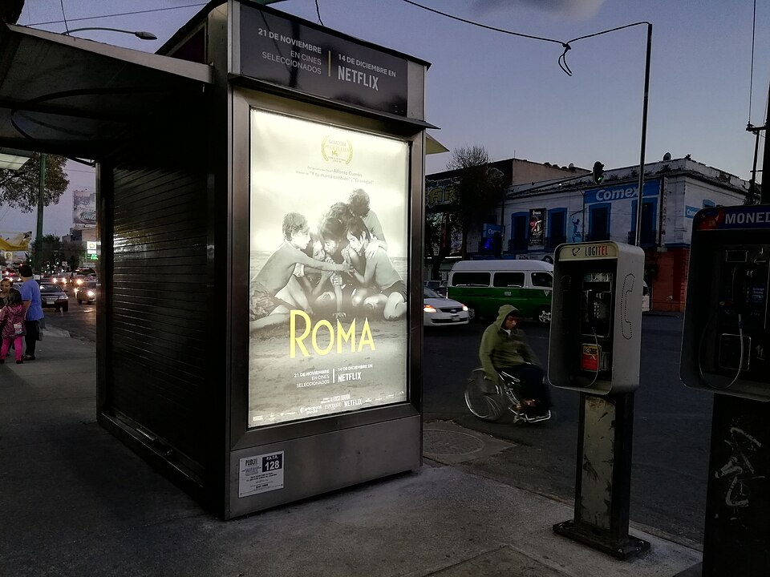

Цифровая эра и стриминг
2000 – наши дни

10 самых влиятельных фильмов эры
Единого официального списка нет. Этот список составлен по общим обзорам истории кино (источники — внизу главной страницы). Фильмы идут по году выпуска.
- Властелин колец: Братство Кольца (The Lord of the Rings: The Fellowship of the Ring)
Питер Джексон, 2001 - Унесённые призраками (千と千尋の神隠し)
Хаяо Миядзаки, 2001 - Звёздные войны. Эпизод II (Star Wars: Episode II – Attack of the Clones)
Джордж Лукас, 2002 - Тёмный рыцарь (The Dark Knight)
Кристофер Нолан, 2008 - Аватар (Avatar)
Джеймс Кэмерон, 2009 - Мстители (The Avengers)
Джосс Уидон, 2012 - Гравитация (Gravity)
Альфонсо Куарон, 2013 - Безумный Макс: Дорога ярости (Mad Max: Fury Road)
Джордж Миллер, 2015 - Рома (Roma)
Альфонсо Куарон, 2018 - Паразиты (기생충)
Пон Джун Хо, 2019